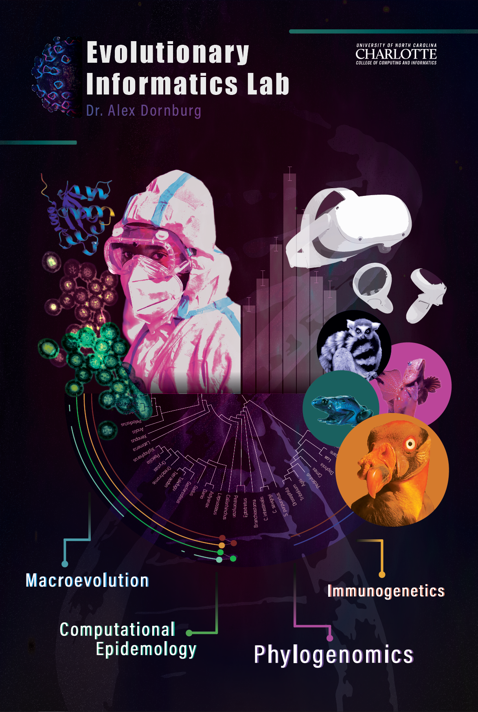

Outreach Portfolio
This page showcases flyers, posters, videos, or other web or print content that I have created over the years for outreach or science communication initatives. This page is currently in progress.



This page showcases flyers, posters, videos, or other web or print content that I have created over the years for outreach or science communication initatives. This page is currently in progress.